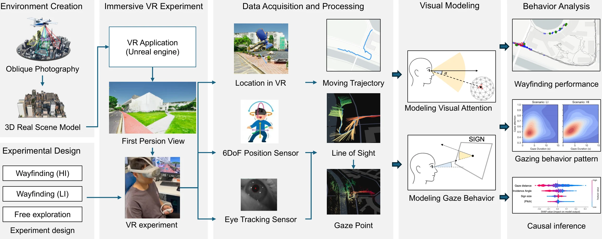
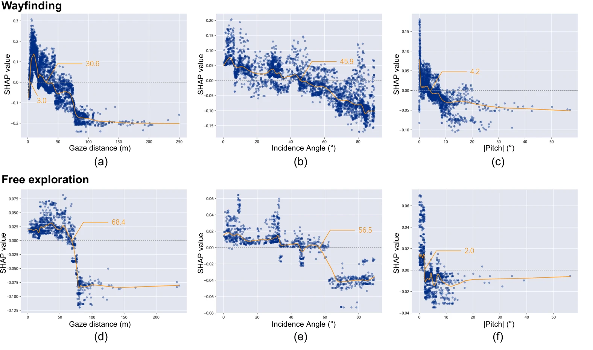
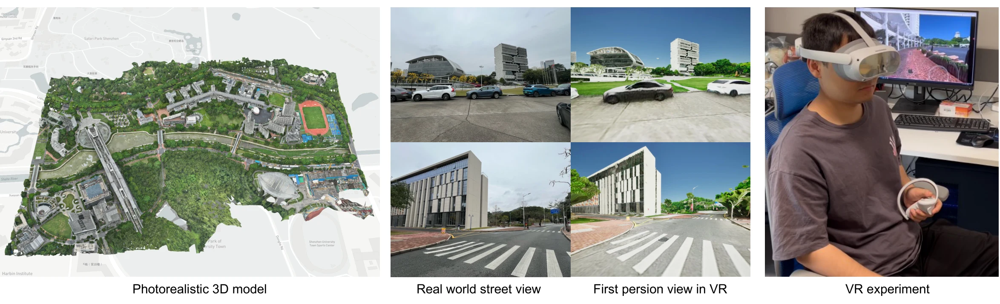

02 / 来龙去脉
真实街头控不住变量，实验室又不够真——所以把街区搬进 VR
无人机航拍重建照片级校园，行人戴 VR 头显在里面寻路，每一次注视都被记录并自动标注语义。点击五个步骤看数据怎么流动。

已发表行为研究（TBS 2026）＋在审开源分析管线，共用这套平台与 30 人数据。
90 秒看完整个实验：戴上眼动 VR 头显 → 在照片级虚拟校园中寻路 → 注视数据回放（绿色为注视点、蓝线为移动轨迹）。
我们用无人机把真实校园搬进 VR，跟踪 30 名行人寻路时的每一次注视，找到了答案——往下拖一个 3D 标识试试。
直接把标识拖到想放的位置，拖牌前的小箭头转朝向。地上的浅青色区域 = 放这里会被认真看——规则来自论文的眼动数据。
论文用 XGBoost 预测每次注视是「认真看」还是「扫一眼」，再用 SHAP 找出几何因素的注意阈值：
| 条件 | 距离 | 朝向偏角 | 视线俯仰 |
|---|---|---|---|
| 赶路找地方 | < 30.6 m（3–10 m 最佳） | < 45.9° | < 4.2° |
| 随便逛逛 | < 68.4 m | < 56.5° | < 2.0° |
设计器的简化假设：行人眼高 1.6 m，沿街心行走；距离、视角、俯仰全部由摆放位置和标识类型自动算出；牌面单面可读（看到背面判不可读）；未计入标识尺寸的次要效应。两个可以自己验证的论文发现：把悬挂牌拖近——太近要抬头，没人抬头看；选地贴——牌面朝天，几何上永远进不了"认真看"区，论文中它注意最少，只适合辅助信息。

论文一 Fig.10：上排赶路、下排闲逛。曲线过零点即上表阈值。
无人机航拍重建照片级校园，行人戴 VR 头显在里面寻路，每一次注视都被记录并自动标注语义。点击五个步骤看数据怎么流动。

已发表行为研究（TBS 2026）＋在审开源分析管线，共用这套平台与 30 人数据。
90 秒看完整个实验：戴上眼动 VR 头显 → 在照片级虚拟校园中寻路 → 注视数据回放（绿色为注视点、蓝线为移动轨迹）。

数据：在审论文 Table 1（均值 ± 标准差，每组 10 人）。